Анимации и интерактивы книгиAnimations and interactives of the book
Все анимации, апплеты и интерактивы, на которые ведут QR-коды книги «Введение в физику нейтрино».All animations, applets and interactives linked by the QR codes of the book “Introduction to Neutrino Physics”.
Раздел «Знакомство с нейтрино»Section “First contact with the neutrino”
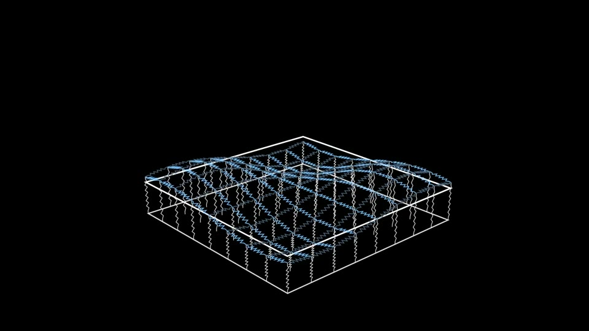
Аналогия: связанные осцилляторыAn analogy: coupled oscillatorsQR 0001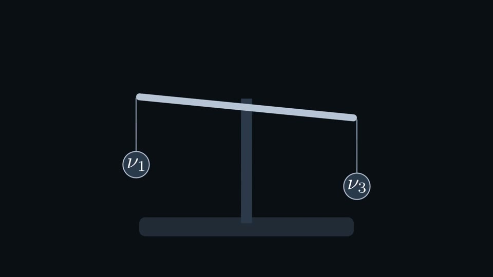
Порядок масс нейтриноThe ordering of the neutrino massesQR 0002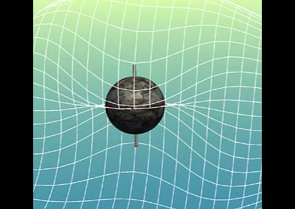
Спин и вращениеSpin and rotationQR 0003 Нейтрино как квантовый хамелеонNeutrino as a quantum chameleonQR 0004
Нейтрино как квантовый хамелеонNeutrino as a quantum chameleonQR 0004- слайдslideОтношение потоков атмосферных нейтриноThe flux ratio of atmospheric neutrinosQR 0028
Раздел «Взаимодействия нейтрино»Section “Neutrino interactions”
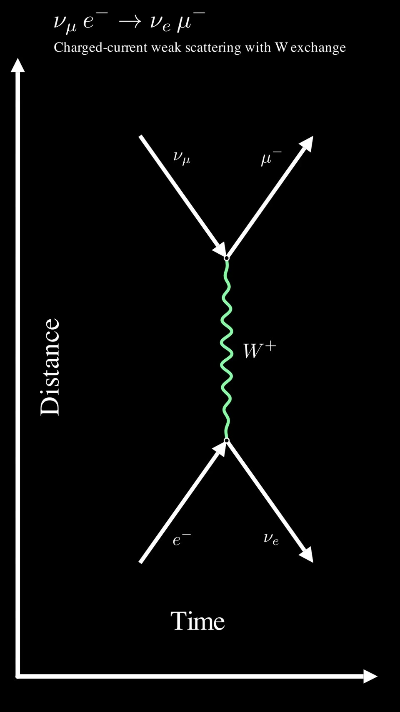
Рассеяние νμ + e → νe + μScattering νμ + e → νe + μQR 0005- Рассеяние нейтрино через Z-бозонNeutrino scattering through the Z bosonQR 0006
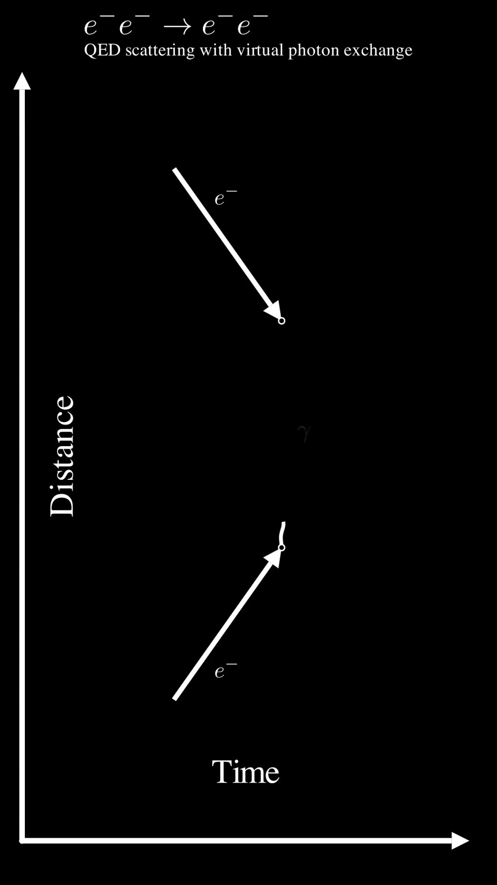
Рассеяние $e^-e^-$ с обменом фотоном$e^-e^-$ scattering with a photon exchangeQR 0007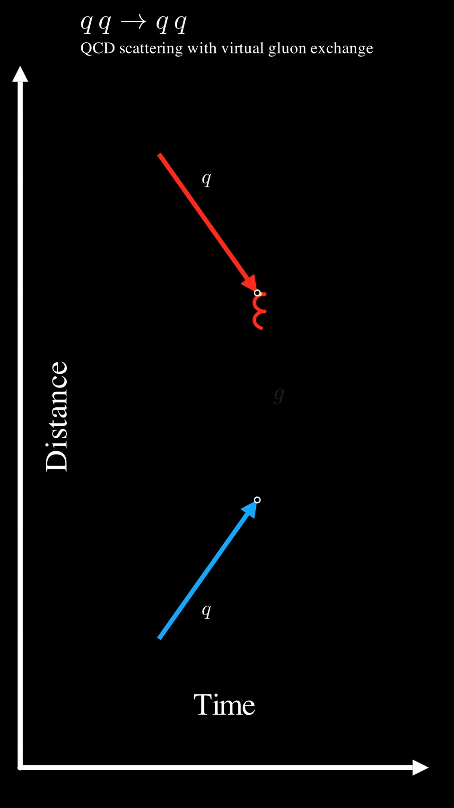
Рассеяние $qq\to qq$ с обменом глюоном$qq\to qq$ scattering with a gluon exchangeQR 0008- слайдslideПространственное отражениеSpatial reflectionQR 0029
- слайдslideРезультат опыта ВуThe result of the Wu experimentQR 0030
- слайдslideСмена спиральности при выборе системы отсчётаHelicity changes with the reference frameQR 0031
- слайдslideПередача спиновой метки от нейтрино к фотонуThe spin tag passes from the neutrino to the photonQR 0032
- апплетappletРезонанс как фильтр направленияResonance as a filter of directionQR 0033
- слайдslideМагнитный анализатор круговой поляризацииA magnetic analyzer of circular polarizationQR 0034
- слайдslideЦепочка измерения спиральности нейтриноThe chain of the neutrino helicity measurementQR 0035
Раздел «Детектирование»Section “Detection”
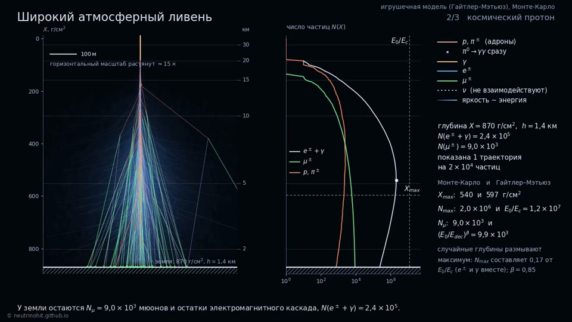
Широкий атмосферный ливеньA cosmic-ray air showerQR 0009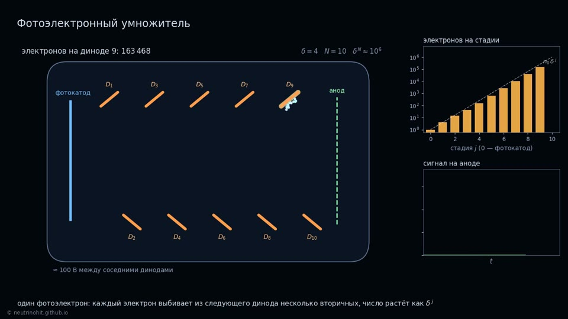
Как работает фотоумножительHow a photomultiplier tube worksQR 0010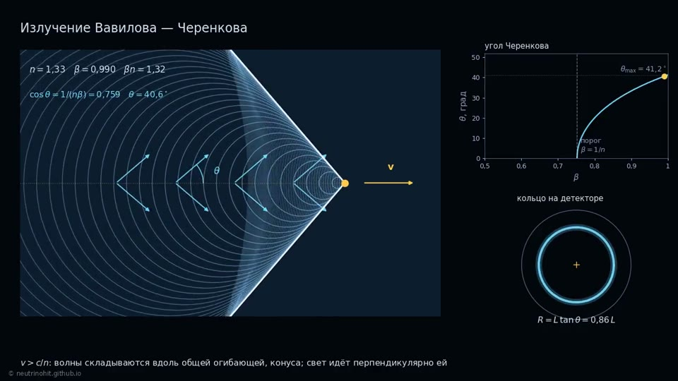
Излучение Вавилова — Черенкова: конус из волнCherenkov radiation: a cone of waveletsQR 0011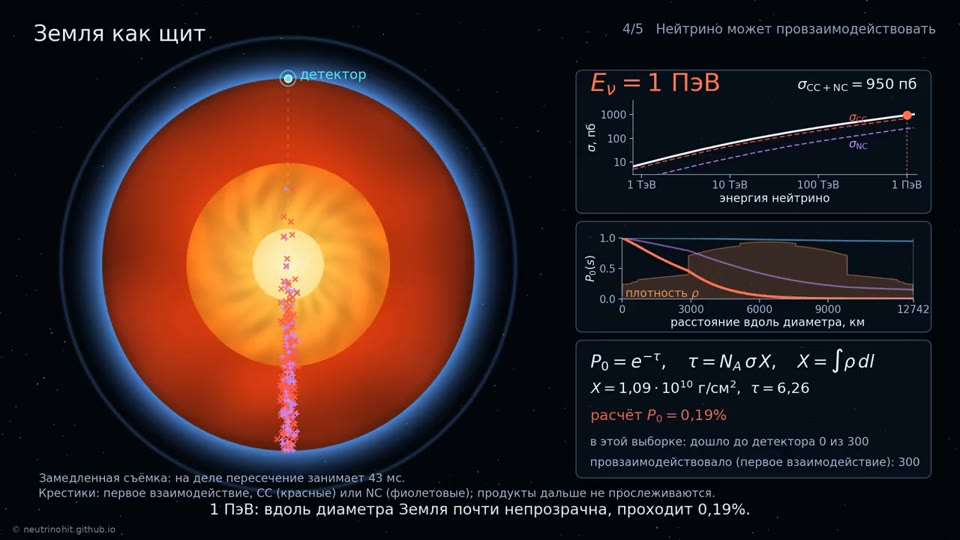
Земля как щит: мюоны останавливаются, нейтрино проходятThe Earth as a shield: muons stop, neutrinos passQR 0025
Раздел «Прямое измерение массы»Section “Direct measurement of the neutrino mass”
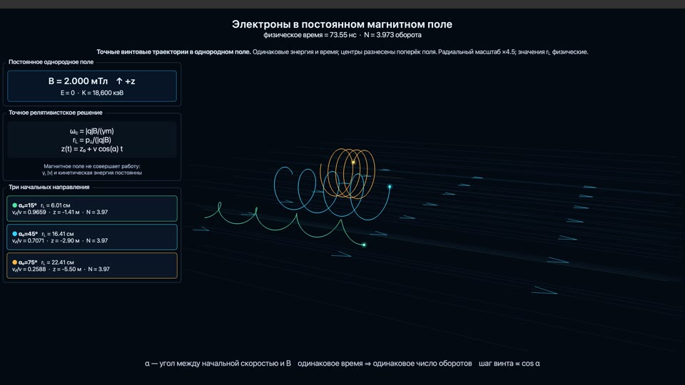
Электроны в постоянном магнитном полеElectrons in a constant magnetic fieldQR 0012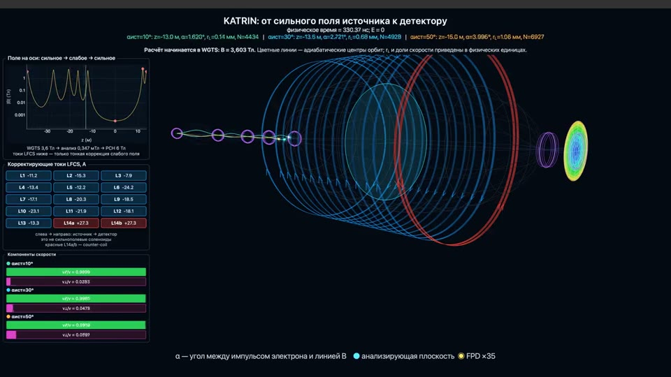
KATRIN: от сильного поля источника к детекторуKATRIN: from the strong field of the source to the detectorQR 0013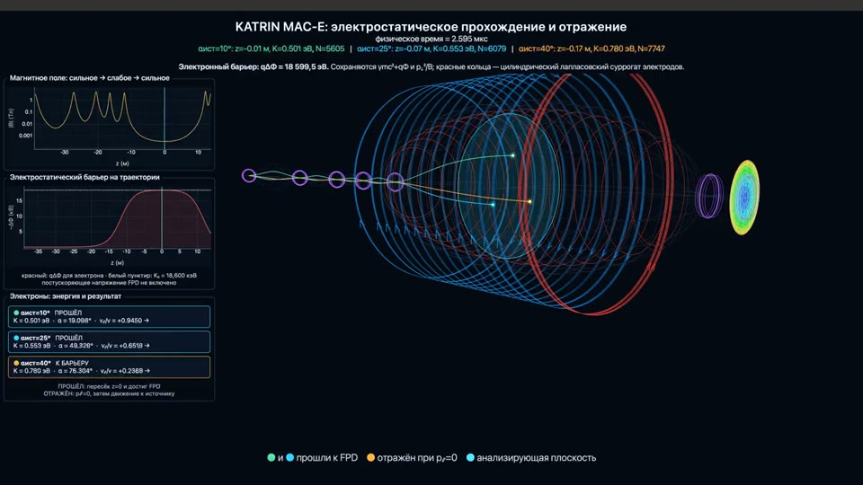
KATRIN MAC-E: прохождение и отражениеKATRIN MAC-E: transmission and reflectionQR 0014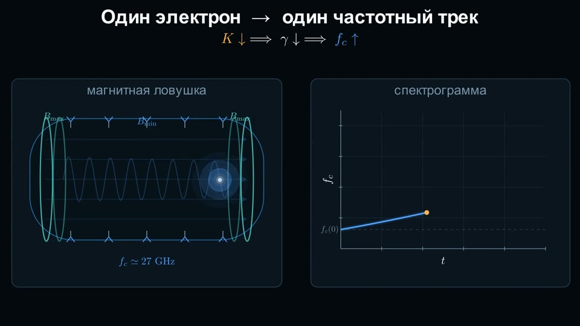
Project 8: один электрон — один частотный трекProject 8: one electron, one frequency trackQR 0015- апплетappletКулоновская поправка к β-спектруThe Coulomb correction to the β spectrumQR 0036
- слайдslideМасса нейтрино и конец β-спектраThe neutrino mass and the end of the β spectrumQR 0037
- апплетappletМасса нейтрино и энергетическое разрешениеThe neutrino mass and the energy resolutionQR 0038
- апплетappletОдин β-спектр и несколько массовых пороговOne β spectrum and several mass thresholdsQR 0039
- слайдslideГрафик Кури вблизи конечной точкиThe Kurie plot near the endpointQR 0040
- апплетappletЦиклотронное движение в двух пространствахCyclotron motion in two spacesQR 0041
- апплетappletПлоский ротаторA planar rotorQR 0042
- апплетappletЧастица в медленно меняющемся желобеA particle in a slowly changing troughQR 0043
- апплетappletСиловая линия, зеркальная точка и конус потерьA field line, the mirror point and the loss coneQR 0044
- апплетappletИнтегральный спектр KATRINThe integral spectrum of KATRINQR 0045
- апплетappletСпектр излучения и частотный трек CRESThe emission spectrum and the CRES frequency trackQR 0046
- апплетappletМасса нейтрино по временам прилётаThe neutrino mass from the arrival timesQR 0047
Раздел «Вакуумные осцилляции»Section “Vacuum oscillations”
- Квантовый хамелеонThe quantum chameleonQR 0016
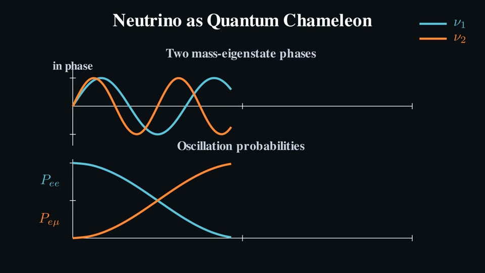
Две массовые фазы и вероятности осцилляцийTwo mass phases and the oscillation probabilitiesQR 0017- апплетappletЛаборатория двухфлэйворных осцилляцийA laboratory of two-flavour oscillationsQR 0048
- апплетappletСвязанные маятники разных массCoupled pendulums of different massesQR 0049
- апплетappletСоберите матрицу PMNS из измеренийBuild the PMNS matrix from measurementsQR 0050
- апплетappletТри флэйворные вероятностиThree flavour probabilitiesQR 0051
Раздел «Осцилляции в веществе»Section “Oscillations in matter”
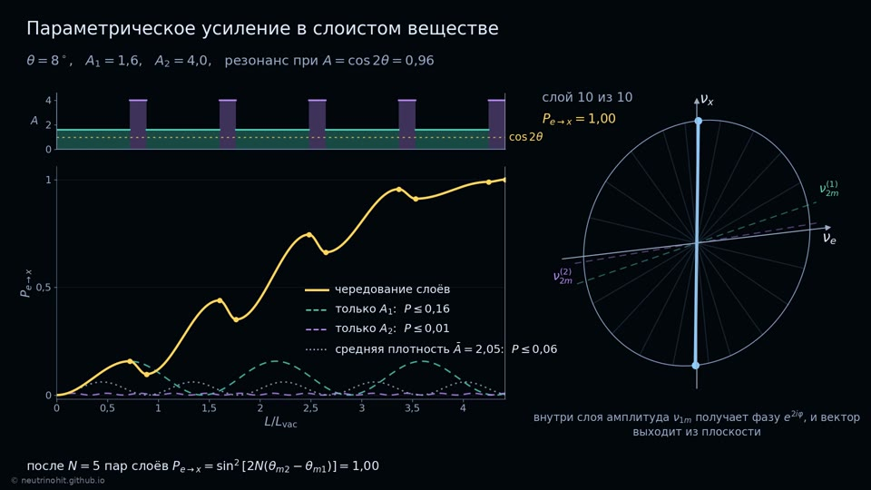
Параметрическое усиление в чередующихся слоях веществаParametric amplification in alternating layers of matterQR 0018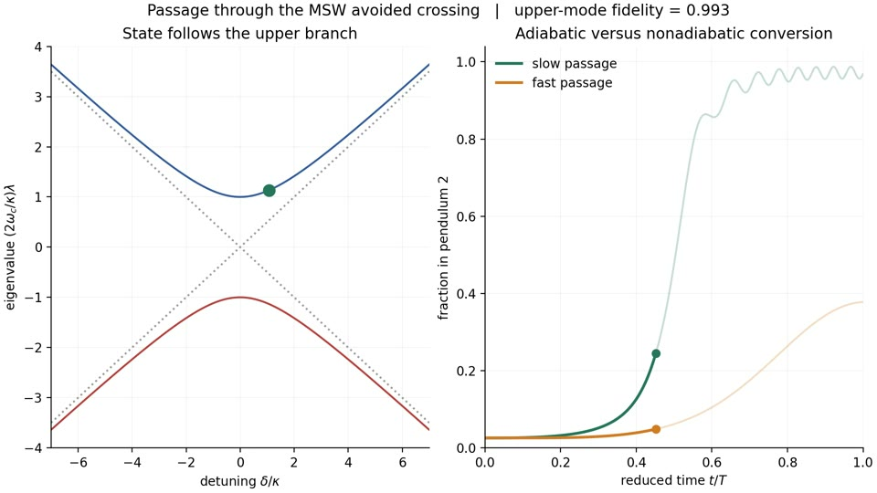
Адиабатический и неадиабатический проход через MSW-резонансAdiabatic and non-adiabatic passage through the MSW resonanceQR 0019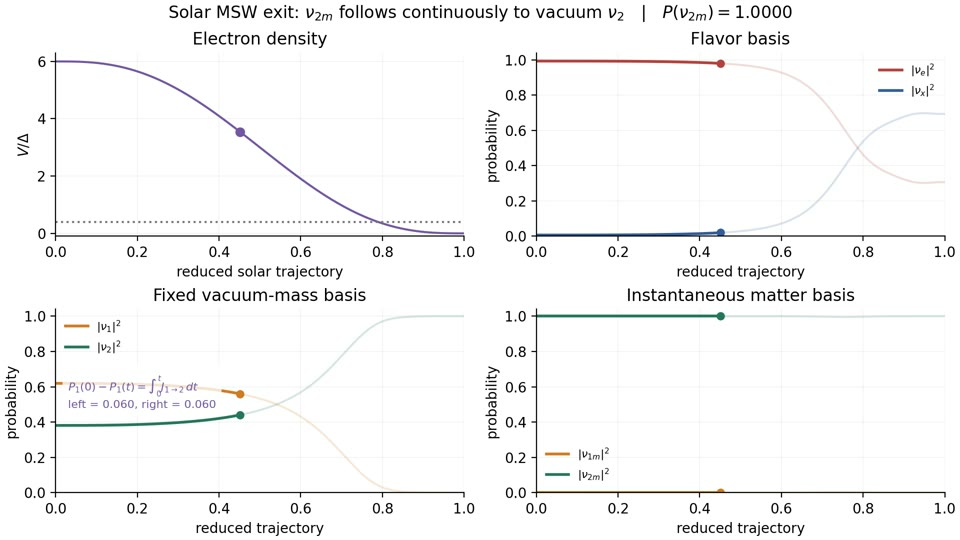
Солнечный адиабатический выход в трёх базисахThe solar adiabatic exit in three basesQR 0020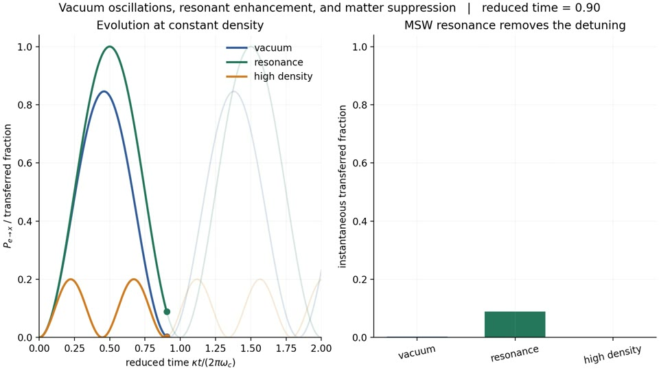
Вакуумные осцилляции, резонанс и подавление: механическая модельVacuum oscillations, resonance and suppression: a mechanical modelQR 0021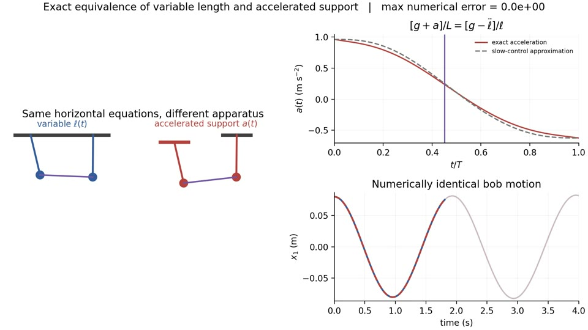
Маятник переменной длины и маятник с ускоренной опоройA pendulum of variable length and a pendulum with an accelerated supportQR 0022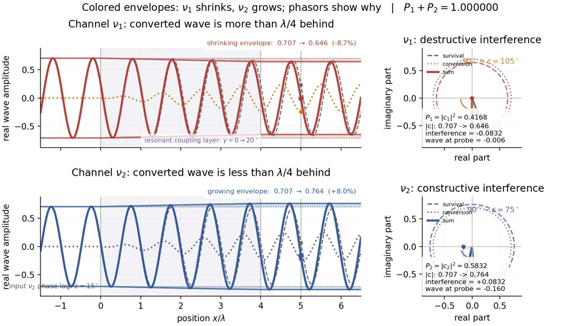
Интерференция волн и фазоров в тонком резонансном слоеInterference of waves and phasors in a thin resonant layerQR 0023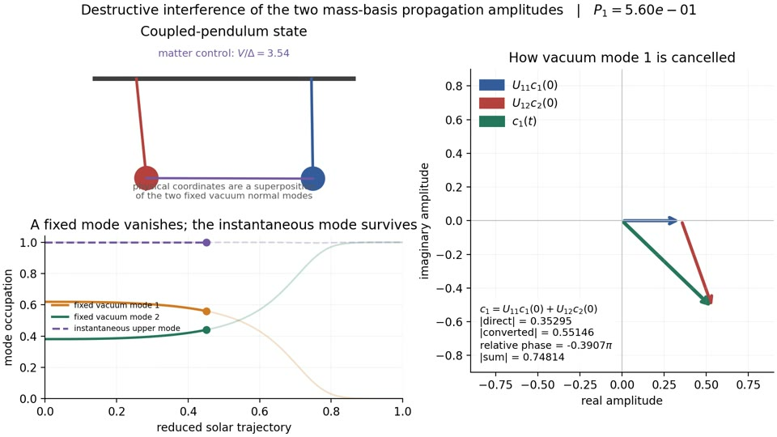
Деструктивная интерференция амплитуд конечной моды $\nu_1$Destructive interference of the amplitudes of the final mode $\nu_1$QR 0024- апплетappletТонкий слой и накопленная фазаA thin layer and the accumulated phaseQR 0052
- апплетappletДве волны в веществеTwo waves in matterQR 0053
- апплетappletОсцилляции при постоянной плотностиOscillations at constant densityQR 0054
- апплетappletМедленный и быстрый проход через избегаемое пересечениеSlow and fast passage through an avoided crossingQR 0055